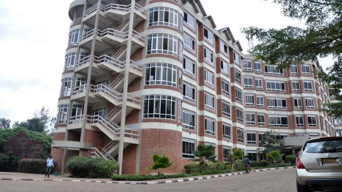

Vision and Mission
To be a leading University that develops highly enterprising graduates prepared and dedicated to building a more just and sustainable society locally, nationally and globally.
University of Rwanda welcomes International students who satisfy the minimum entry requirement which include :
At least a minimum of 5
Passes at "O" level and at least two principle passes at "A" level or an equivalent qualification (secured at the same sitting).
For more
information, please contact :
registrar@ur.ac.rw
Welcome to the School of Information and Communication Technology
It is among the five schools of College of Science and Technology, University of Rwanda (UR, CST). Our School aims at producing competent and skillful graduates catering to the demands of the rewarding ICT job market in various industry sectors.
ICT is the backbone and an essential element of most businesses today. It provides impetus to the day-to-day business functions by allowing for better cross departmental or organizational collaboration and communication, more effective streamlining of business processes, better management of human and material resources